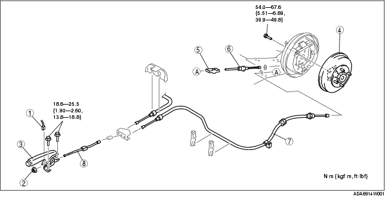

Parking brake removal/installation
1. Remove the center console. (See CONSOLE REMOVAL/INSTALLATION.)
2. Remove the catalytic converter.(See EXHAUST SYSTEM REMOVAL/INSTALLATION [ZY].)
3. Remove the insulator.
4. Remove in the order indicated in the table.
5. Install in the reverse order of removal.
6. After installation inspect the parking brake stroke, and adjust if necessary.

|
1
|
Parking brake switch connector
|
|
2
|
Adjusting nut
|
|
3
|
Parking brake lever
|
|
4
|
Hub spindle, brake drum component
|
|
5
|
Connector
(See Connector Removal Note)
|
|
6
|
End cable
|
|
7
|
Rear parking brake cable
|
|
8
|
Front parking brake cable
|
Connector Removal Note
1. Disconnect the parking cable indicated in the figure, remove the connector.

Connector Installation Note
1. Install the parking cable to the connector.
2. Make sure that the connector tab is caught correctly.